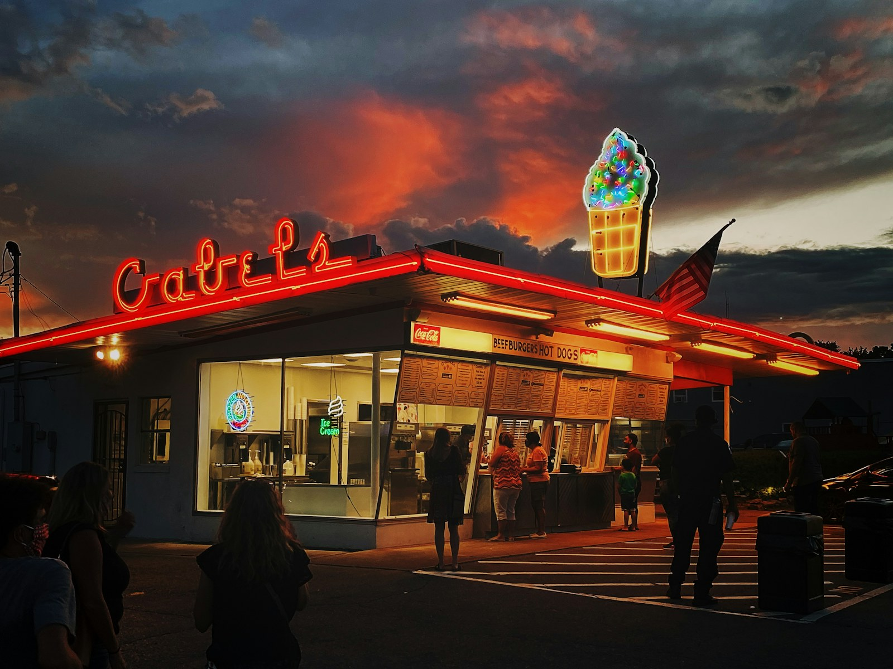

MUSIC
What is Americana music?
What the music is and how it differs from country, the instruments and the artists, and which size of Americana band to book for a reception, a retreat or a wedding in Colorado.

- Americana is an umbrella name for American roots music, the songs that draw on country, folk, bluegrass, blues and rock at once.
- Country usually means the sound of country radio. Americana leans on older country records and on folk, and bluegrass is the strictest member of the family, with a traditional lineup and no drums.
- The artists run from The Band and John Prine to Jason Isbell and Brandi Carlile, and Colorado has its own in Nathaniel Rateliff, Gregory Alan Isakov and the Lumineers.
- For an event, the trio suits a reception or a dinner where people want to talk, and the quartet is the dance band.
Americana is an umbrella name for American roots music, the songs that come out of country, folk, bluegrass, blues and rock and borrow from several of them at once. If you know John Prine’s Angel from Montgomery, you know the sound. It’s an acoustic guitar and a singer telling a story, with a fiddle or a mandolin taking the melody between the verses and an upright bass underneath.
It’s a recognized genre. The Americana Music Association, its trade organization, was founded in 1999 and is based in Nashville, and the Grammy Awards have had a Best Americana Album category since 2010.
Is Americana the same as country? #
They’re close relatives, and plenty of artists get filed under both. When most people say country, they mean the music on country radio, played by a full band with electric guitars and drums and recorded with a polished studio sound. Americana takes more from older country records, with their fiddle, pedal steel guitar and story songs, and mixes in folk, blues and rock. It’s usually more acoustic, and the lyrics get more of the attention.
Folk and Americana overlap the most. Folk is the tradition of songs passed from singer to singer, and of new songs written in the same style, usually sung by one voice over an acoustic guitar. A quiet Americana record can be hard to tell from a folk record.
Bluegrass is the easiest of the three to pin down. It takes its name from Bill Monroe’s band, the Blue Grass Boys. The traditional lineup is banjo, mandolin, fiddle, acoustic guitar and upright bass, with no drums. The tempos are fast, the solos pass from one player to the next, and the harmony singing is high and close.
If you’re choosing between a bluegrass band and an Americana band for an event, the difference you’ll hear is how much ground the band covers. A bluegrass band keeps the bluegrass sound all night, even when it plays a rock song. An Americana band can move from a bluegrass standard to a folk song to a rock song in one set, and play each one in its own style.
What instruments are in an Americana band? #
Acoustic guitar is at the center of almost every Americana band, and the singer usually plays it. These are the other instruments you’ll hear:
- Fiddle. The same instrument as a violin. The name changes with the music, and in country, bluegrass and Americana it’s called a fiddle.
- Mandolin. A small, bright instrument with eight strings in four pairs. In bluegrass it plays fast melodies and a short, sharp chord on the offbeat that keeps the time.
- Upright bass. The tall bass played standing up, also called a double bass, plucked with the fingers for a round, woody low end.
- Banjo. The five-string banjo’s fast, rolling picking is the sound most people hear as bluegrass.
- Pedal steel and dobro. Two kinds of slide guitar. The pedal steel sits on legs and is played with a steel bar, with pedals that bend the notes, and the dobro is a resonator guitar played flat on the lap. Both make the long, sliding notes you hear on a classic country ballad.
- Harmonica, often played by the singer, on a holder worn around the neck.
- Drums and electric guitar, which push the sound toward rock.
The Americana band we book is a singer on acoustic guitar, a musician on fiddle or mandolin, and an upright bass player, and adding drums makes it a quartet.
Which artists and songs are Americana? #
People use the name for the older records the genre grew out of as well as for the artists most associated with it now. Here’s a short list with one song from each:
- The Band, The Weight
- The Grateful Dead, Friend of the Devil
- Emmylou Harris, Boulder to Birmingham
- Lucinda Williams, Car Wheels on a Gravel Road
- Jason Isbell, Cover Me Up
- Brandi Carlile, The Story
- The Avett Brothers, I and Love and You
Colorado has its own Americana artists. Nathaniel Rateliff and the Night Sweats, the band behind S.O.B., are from Denver. Gregory Alan Isakov, who wrote Big Black Car, lives on a farm in Boulder County. The Lumineers moved to Denver in 2009 and were based there when Ho Hey made them famous.
What does an Americana band play at an event? #
An Americana band booked for an event mostly plays covers, and ours draws them from two songbooks. One is the music people expect on a mountain evening, which means the Grateful Dead, Tom Petty, Neil Young, Bob Dylan, The Band, the Allman Brothers, John Prine and the Avett Brothers. The other is the Colorado songbook of Rateliff, Isakov and the Lumineers. The bluegrass standards are in the book too, led by the fiddle and the mandolin.
A welcome reception gets the acoustic end of the book, and a ranch dance floor gets Petty and the Dead. The band also learns one song of your choosing as part of every booking. We book it across Denver and the mountain towns, and most of its dates are on lawns, ranches and resort decks.
Trio or quartet: which Americana band to book #
- The trio for the reception a group walks into on its first night in Colorado, a dinner where people want to talk, or the cocktail hour at a mountain wedding. It plays at a level guests talk across, and on a lawn the people at the back hear the fiddle while the front tables keep talking.
- The quartet for a ranch dinner, a summer picnic that runs into the evening, the last night of a retreat, or a ranch wedding reception. It’s a dance band, and it goes as loud as the venue allows.
Both sizes, with the space and power each one needs, are on the Americana band page. A retreat usually has three evenings to fill, and the corporate retreats page covers the resort towns and the acts for the other nights. Corporate retreat evening ideas in Vail takes eight evenings in the valley one at a time, from the welcome reception to the closing night. The going rates for live music across Colorado, with a source for each figure, are in the live music cost guide.